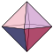

Subsection Section Preview
Investigate!
A spider is standing on one face of an octahedron (a polyhedron with eight triangular faces). She wants to crawl along the solid from face to face so that she crosses each edge exactly once. Is this possible? If so, how?

If we start at a vertex and trace along edges to get to other vertices, we create a walk through the graph. More precisely, a walk in a graph is a sequence of vertices such that every vertex in the sequence is adjacent to the vertices before and after it in the sequence. If the walk travels along every edge exactly once, then the walk is called an Euler trail (or Euler walk or Euler path). If, in addition, the starting and ending vertices are the same (so you trace along every edge exactly once and end up where you started), then the walk is called an Euler circuit (or Euler tour). Of course if a graph is not connected, there is no hope of finding such a trail or circuit. For the rest of this section, assume all the graphs discussed are connected.
The bridges of Königsberg problem is really a question about the existence of Euler trails. There will be a route that crosses every bridge exactly once if and only if the multigraph below has an Euler trail:
This graph is small enough that we could actually check every possible walk that does not reuse edges, and in doing so convince ourselves that there is no Euler trail (let alone an Euler circuit). On small graphs that do have an Euler trail, it is usually not difficult to find one. Our goal is to find a quick way to check whether a graph has an Euler trail or circuit, even if the graph is quite large.
Worksheet Preview Activity
Which of the graphs below have an Euler trail? Which have an Euler circuit?
\begin{equation*}
G_1
\end{equation*}
\begin{equation*}
G_2
\end{equation*}
\begin{equation*}
G_3
\end{equation*}
\begin{equation*}
G_4
\end{equation*}
\begin{equation*}
G_5
\end{equation*}
\begin{equation*}
G_6
\end{equation*}
1.
2.
3.
Subsection Conditions for Euler Trials
One way to guarantee that a graph does not have an Euler circuit is to include a “spike,” a vertex of degree 1.
The vertex \(a\) has degree 1, and if you try to make an Euler circuit, you see that you will get stuck at the vertex. It is a dead end. That is, unless you start there. But then there is no way to return, so there is no hope of finding an Euler circuit. There is however an Euler trail. It starts at the vertex \(a\text{,}\) then loops around the triangle. You will end at the vertex of degree 3.
You run into a similar problem whenever you have a vertex of any odd degree. If you start at such a vertex, you will not be able to end there (after traversing every edge exactly once). After using one edge to leave the starting vertex, you will be left with an even number of edges emanating from the vertex. Half of these could be used for returning to the vertex, the other half for leaving. So you return, then leave. Return, then leave. The only way to use up all the edges is to use the last one by leaving the vertex. On the other hand, if you have a vertex with odd degree that you do not start a trail at, then you will eventually get stuck at that vertex. The trail will use pairs of edges incident to the vertex to arrive and leave again. Eventually all but one of these edges will be used up, leaving only an edge to arrive by, and none to leave again.
What all this says is that if a graph has an Euler trail and two vertices with odd degree, then the Euler trail must start at one of the odd-degree vertices and end at the other. In such a situation, every other vertex must have an even degree since we need an equal number of edges to get to those vertices as to leave them. How could we have an Euler circuit? The graph could not have any odd-degree vertex as an Euler trail would have to start there or end there, but not both. Thus for a graph to have an Euler circuit, all vertices must have even degree.
The converse is also true: if all the vertices of a graph have even degree, then the graph has an Euler circuit, and if there are exactly two vertices with odd degree, the graph has an Euler trail. To prove this is a little tricky, but the basic idea is that you will never get stuck because there is an “outbound” edge for every “inbound” edge at every vertex. If you try to make an Euler trail and miss some edges, you will always be able to “splice in” a circuit using the edges you previously missed.
Euler Trails and Circuits.
Since the bridges of Königsberg graph has all four vertices with odd degree, there is no Euler trail through the graph. Thus there is no way for the townspeople to cross every bridge exactly once.
Subsection Hamilton Paths
Suppose you wanted to tour Königsberg in such a way that you visit each land mass (the two islands and both banks) exactly once. This can be done. In graph theory terms, we are asking whether there is a path that visits every vertex exactly once. Such a path is called a Hamilton path (or Hamiltonian path). We could also consider Hamilton cycles, which are Hamilton paths that start and stop at the same vertex.
Example 2.4.1.
Determine whether the graphs below have a Hamilton path.
Solution.
The graph on the left has a Hamilton path (many different ones, actually), as shown here:
The graph on the right does not have a Hamilton path. You would need to visit each of the “outside” vertices, but as soon as you visit one, you get stuck. Note that this graph does not have an Euler trail, although there are graphs with Euler trails but no Hamilton paths.
It appears that finding Hamilton paths would be easier because graphs often have more edges than vertices, so there are fewer requirements to be met. However, nobody knows whether this is true. There is no known simple test for whether a graph has a Hamilton path. For small graphs this is not a problem, but as the size of the graph grows, it gets harder and harder to check whether there is a Hamilton path. In fact, this is an example of a question which as far as we know is too difficult for computers to solve in general, as it is an example of a problem that is NP-complete.
Exercises Additional Exercises
1.
You and your friends want to tour the southwest by car. You will visit the nine states below, with the following rather odd rule: you must cross each border between neighboring states exactly once (so, for example, you must cross the Colorado-Utah border exactly once). Can you do it? If so, does it matter where you start your road trip? What fact about graph theory solves this problem?

2.
Which of the following graphs contain an Euler trail? Which contain an Euler circuit?
\(\displaystyle K_4\)
\(K_5\text{.}\)
\(\displaystyle K_{5,7}\)
\(\displaystyle K_{2,7}\)
\(\displaystyle C_7\)
\(\displaystyle P_7\)
3.
Edward A. Mouse has just finished his brand new house. The floor plan is shown below:
Edward wants to give a tour of his new pad to a lady-mouse-friend. Is it possible for them to walk through every doorway exactly once? If so, in which rooms must they begin and end the tour? Explain.
Is it possible to tour the house visiting each room exactly once (not necessarily using every doorway)? Explain.
After a few mouse-years, Edward decides to remodel. He would like to add some new doors between the rooms he has. Of course, he cannot add any doors to the exterior of the house. Is it possible for each room to have an odd number of doors? Explain.
4.
For which \(n\) does the graph \(K_n\) contain an Euler circuit? Explain.
5.
For which \(m\) and \(n\) does the graph \(K_{m,n}\) contain an Euler trail? An Euler circuit? Explain.
6.
For which \(n\) does \(K_n\) contain a Hamilton path? A Hamilton cycle? Explain.
7.
For which \(m\) and \(n\) does the graph \(K_{m,n}\) contain a Hamilton path? A Hamilton cycle? Explain.
Hint.
This is harder than the previous three questions. Think about which “side” of the graph the Hamilton path would need to be on every other step.
8.
A bridge builder has come to Königsberg and would like to add bridges so that it is possible to travel over every bridge exactly once. How many bridges must be built?
9.
Below is a graph representing friendships between a group of students (each vertex is a student and each edge is a friendship). Is it possible for the students to sit around a round table in such a way that every student sits between two friends? What does this question have to do with trails?
Hint.
If you read off the names of the students in order, you would need to read each student’s name exactly once, and the last name would need to be of a student who was friends with the first. What sort of a cycle is this?
10.
On the table rest 8 dominoes, as shown below. If you were to line them up in a single row, so that any two sides touching had matching numbers, what would the sum of the two end numbers be?
Hint.
Draw a graph with 6 vertices and 8 edges. What sort of walk would be appropriate?
11.
Is there anything we can say about whether a graph has a Hamilton path based on the degrees of its vertices?
Suppose a graph has a Hamilton path. What is the maximum number of vertices of degree one the graph can have? Explain why your answer is correct.
Find a graph that does not have a Hamilton path even though no vertex has degree one. Explain why your example works.
12.
Consider the following graph:
Find a Hamilton path. Can your path be extended to a Hamilton cycle?
Is the graph bipartite? If so, how many vertices are in each “part”?
Use your answer to part (b) to prove that the graph has no Hamilton cycle.
Suppose you have a bipartite graph \(G\) in which one part has at least two more vertices than the other. Prove that \(G\) does not have a Hamilton path.